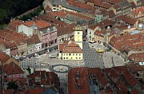
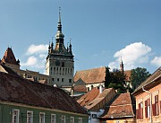

Romania :: A Closer Look
In these pages I take a closer look at some of my favourite places in Romania. Only Transylvania is covered so far, but I intend to write about other destinations in future.
|  |
Braşov and SurroundingsThe southeastern corner of Transylvania conveniently gathers many of the province's most attractive features into one place. Within an hour's journey from Braşov's mediaeval heart you can find towering mountains, gothic castles, rolling fields, thick forests, and villages with fortified churches. You could hit the highlights in a couple of days or spend two weeks exploring - read this article to help you decide. |
|  |
Three towns in TransylvaniaThe Land Beyond the Forest is one of Europe's most intriguing corners, a complex patchwork of Romania, Hungarian, and German influences set in an appealing and mostly unspoiled landscape. Sibiu, Sighişoara and Cluj rank among the highlights of the region. |